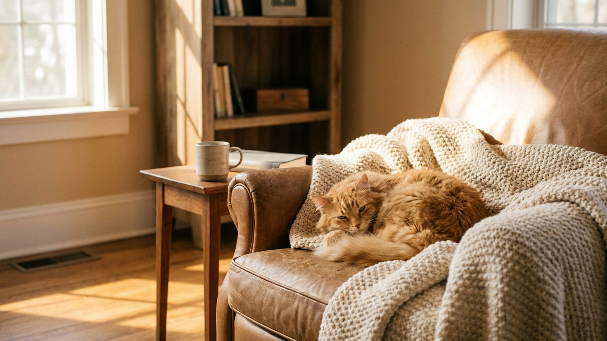

Питомец игнорирует лежанку: почему и как это исправить

16 июля 2026 · 3 минуты чтения · Быт с питомцем · Поведение · Кошки · Собаки
Лежанка куплена, установлена на видном месте — питомец обнюхал и ушёл спать в коробку из-под посылки. Знакомо? Дело не в капризах: у кошек и собак есть конкретные критерии «правильного» места для сна, и когда лежанка им не соответствует, животное просто выбирает другой вариант. Ниже — как устранить причину, а не следствие.
🐾 Спросите AI-ветеринара прямо сейчас
AnimaLife — приложение, где AI-ветеринар отвечает на вопросы о кошке или собаке 24/7. Бесплатно, без записи и очередей.
Открыть в Telegram → Открыть в MAX →
Почему питомец не ложится туда, куда вы решили
У животных при выборе места для сна работает инстинкт: безопасность, тепло, контроль над пространством. Лежанка может не подойти сразу по нескольким причинам.
- Место на проходе или в шумной зоне — кошки и собаки не хотят спать там, где их могут потревожить или застать врасплох.
- Слишком открытое пространство — кошкам важен «тыл»: стена, угол или бортик. Собакам крупных пород часто нужно, наоборот, не чувствовать себя зажатыми.
- Чужой запах — новая лежанка пахнет магазином, синтетикой, чужим. Это настораживает.
- Неподходящая температура — лежанка стоит на сквозняке или, наоборот, у горячей батареи.
- Размер не тот — питомец не помещается полностью или, напротив, чувствует себя «потерянным» в огромном пространстве.
Как выбрать правильное место
Место важнее, чем сама лежанка. Понаблюдайте, где питомец сейчас предпочитает отдыхать: это подскажет логику его выбора.
- Кошки чаще выбирают возвышения, углы, места у стены с обзором комнаты. Лежанка на подоконнике, полке или у стены — хороший старт.
- Собаки, особенно стайные породы, любят быть рядом с хозяином. Лежанка в спальне или в той комнате, где вы проводите вечер, — рабочий вариант.
- Избегайте проходных мест, прихожей с частым движением, мест рядом с входной дверью (сквозняки, шум).
- Тихий угол с двумя стенами рядом — универсальное решение для большинства кошек.
Размер, форма, материал: что реально работает
Форма лежанки зависит от того, как питомец спит. Если он сворачивается клубком — подойдёт круглая или овальная с бортиками. Если вытягивается в полный рост — нужен плоский матрас или прямоугольная лежанка с запасом длины.
- Размер: питомец должен помещаться полностью, вытянувшись. Для кошки — плюс 10–15 см к длине тела. Для собаки — плюс 20–30 см.
- Материал: натуральные ткани (хлопок, флис) нейтральнее по запаху, чем синтетика. Мягкий наполнитель без резкого запаха — приоритет.
- Бортики: кошки любят опереть голову на бортик; собакам крупных пород бортики нередко мешают — лучше плоская поверхность.
- Съёмный чехол и возможность стирки — практическая необходимость, не пункт «было бы неплохо».
Как приучить питомца к новой лежанке
Не переставляйте лежанку каждые два дня в надежде угадать — это только усиливает тревогу. Выберите место и дайте время.
- Положите на лежанку старую футболку или небольшое полотенце с вашим запахом — это снижает настороженность.
- Для кошек: можно нанести на углы лежанки немного кошачьей мяты или положить любимую игрушку.
- Для собак: угощение и похвала каждый раз, когда пёс ложится туда сам, — без принуждения.
- Первые 2–3 дня питомец может просто нюхать и уходить — это нормально. Не тащите его туда силой.
- Если через неделю лежанку всё равно игнорируют — попробуйте другое место, не другую лежанку.
🐾 Дневник здоровья питомца — в кармане
Вес, прививки, симптомы и напоминания в одном приложении. AnimaLife следит за здоровьем питомца вместо вас.
Завести дневник → Открыть в MAX →
🐾 Понравился разбор?
Подпишитесь на канал — каждый день разбираем по одному тревожному симптому у кошек и собак: что в пределах нормы, а когда пора к врачу. Подпишитесь, чтобы не пропустить разбор, который может спасти здоровье вашего питомца.
Материал носит информационный характер и не заменяет очную консультацию ветеринара.
← Все статьи · Открыть AnimaLife в Telegram · RSS